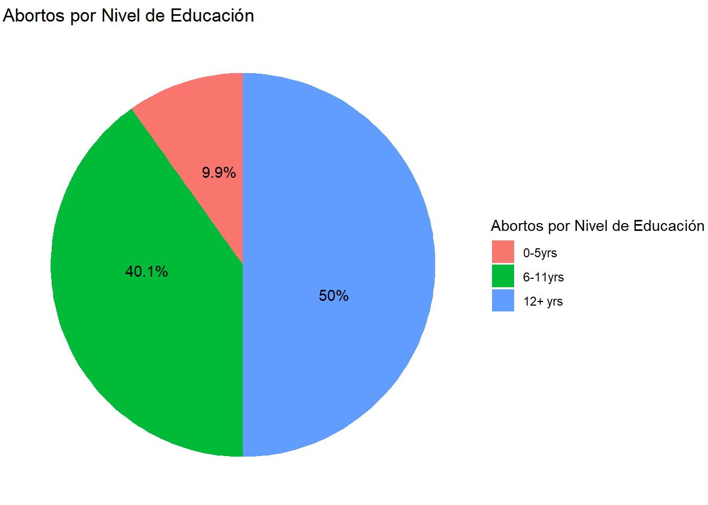

library(tidyverse)
library(plotly)
library(DT)
library(scales)
library(knitr)Práctica 2
Instalación y carga de Librería
Información
Durante este curso se han utilizado bases de datos básicos de R Studio:
- Trees
- co2
- Infert
- Women
Los cuales fueron utilizadas en la tarea 1 para generar gráficos y que de igual manera se van a crear los mismos gráficos con el paquete ggplot2
Gráfico árboles #1
Se diseña un grafico de dispersión con la base de Datos de árboles, en la que se puede observar como las variables numéricas se relacionan, se utilizaron los datos de altura y diámetro de los árboles. Un dato interesante que se puede identificar es que la altura no se relaciona con mayor diámetro de los troncos de los árboles, ya que entre un diámetro de 10 a 14 existen muchas alturas diferentes. Este gráfico permite una mejor compresión de la relación de las variables identidades y ha sido útil para verificar que el diámetro no depende de la altura del árbol.
data("trees")
View(trees)#|label: Grafico de Dispersión
#|warning: false
#|message: false
Árboles <- ggplot(trees, aes(x = Girth, y = Height)) +
geom_point(color = 'black') +
ggtitle("Relación entre el diámetro y la altura de los árboles") +
xlab("Diametro de troncos") +
ylab("altura de árboles")
ggplotly(Árboles)Gráfico # 2 Barras Tratamiento_Aplicados
Este código creo un gráfico de barras que muestra la cantidad de tratamientos aplicados a las plantas, en este caso se pudo identificar que del total de las plantas se han aplicado a la mitad un tipo de tratamiento y a la otra mitad el otro tipo de tratamiento.
data("CO2")
View(CO2)# Crear la gráfica de barras
gráfica1 <- ggplot(CO2, aes(x = Type)) + geom_bar() + labs(title = "Tratamiento Aplicados", x = "Tipo de tratamientos", y = "cantidad de Plantas")
# Mostrar la gráfica
ggplotly(gráfica1)Gráfico pastel #3 Abortos por Nivel de educación
Se muestra según el nivel educativo, las proporciones de la cantidad de abortos presentes, por lo que podemos observar en el gráfico que entre menos nivel educativo la cantidad de abortos que se ha presentado es muy baja comparada a los otros dos niveles.
data("infert")
View(infert)
soma_aborto_educacion <- infert |>
group_by(education) |>
summarise(Tipo_total = sum(induced))
# Calcular porcentajes
porcentaje_aborto_educacion <- soma_aborto_educacion |>
mutate(cantidad = round(Tipo_total / sum(Tipo_total) * 100, 1))
# Gráfico de pastel
grafico_pastel_ggplot2 <-
porcentaje_aborto_educacion |>
ggplot(aes(x = "", y = Tipo_total, fill = education)) +
geom_bar(width = 1, stat = "identity") +
coord_polar(theta = "y") +
geom_text(
aes(label = paste0(cantidad, "%")),
position = position_stack(vjust = 0.6) # para ajustar la posición del texto en cada porción
) +
labs(title = "Abortos por Nivel de Educación",
x = NULL,
y = NULL,
fill = "Abortos por Nivel de Educación") +
theme_void()
# Mostrar el gráfico
print(grafico_pastel_ggplot2)
Gráfico #4 Distribución por peso
Este grafico nos permite comprender la distribución del peso de las mujeres en el que fácilmente se puede comprender la variabilidad.
## Cargar bases de datos
data("women")
View(women)
# Histograma ggplot2
histograma_ggplot2 <-
women |>
ggplot(aes(x = weight)) +
geom_histogram(
aes(label = paste0(
"Peso medio: ", round(after_stat(x), 2), "\n",
"cantidad: ", after_stat(count)
)),
bins = 8
) +
scale_x_continuous(labels = comma, limits = c(115, 165)) +
coord_cartesian(ylim = c(0, 3)) +
ggtitle("Peso de mujeres") +
xlab("Peso (libras)") +
ylab("Cantidad") +
labs(subtitle = "Base de Datos", caption = "R studio")
# Histograma plotly
ggplotly(histograma_ggplot2, tooltip = "label") |>
config(locale = 'es')